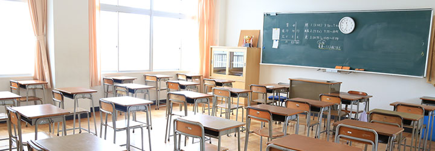
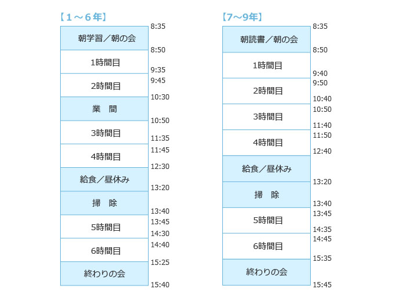
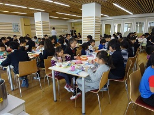

学園生活

多彩で多様な子ども・教職員・保護者の学び舎
ほそごう学園は、小学校に入ったばかりの1年から、社会に飛び立つ一歩手前の9年までが集う細郷の学び舎です。行事や給食、クラブ活動を通した異年齢の交流で年下の人への気遣いと年上の人への憧れが生まれ、それが個々人の自信になっていき、自尊感情が高まっていきます。
また、ほそごう学園は、教職員や保護者のほか、学園を支援していただけるさまざまな立場の方々をボランティアとしてお招きします。異年齢交流、地域交流を通して、多くの人とつながり、子どもたちの生きる根っこは太くなっていくことでしょう。
日課表

クラブ活動
学級・学年の枠を超えてスポーツや芸術、そしてボランティア活動に親しむことを通して、子どもたちは成長していきます。６年生は、３学期に、７～９年の部活動体験（仮入部）をしています。
- 【必修クラブ(4〜6年)】
-
<男女>
バスケット・バドミントン・ソフトボール・
サッカー・ソフトテニス・文化・金管・パソコン・家庭科 - 【課外クラブ(7〜9年)】
-
<男女>
野球・サッカー・卓球・剣道・
吹奏楽・PCアート・HOWP(ボランティアクラブ) - <女子> バスケットボール・バドミントン・ソフトテニス

給食
小中で給食の形式は違いますが、時には異年齢の子どもたちが、ランチルーム(東棟1F)で給食交流を行います。
- 【1〜6年】
- 給食センターからの食缶形式の給食
- 【7〜9年】
- ランチボックス形式の給食 給食センターについて
